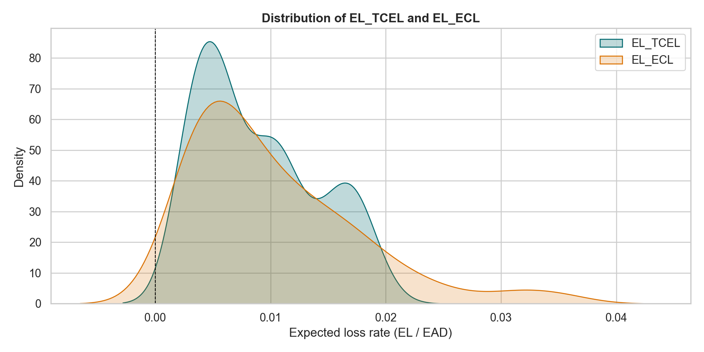
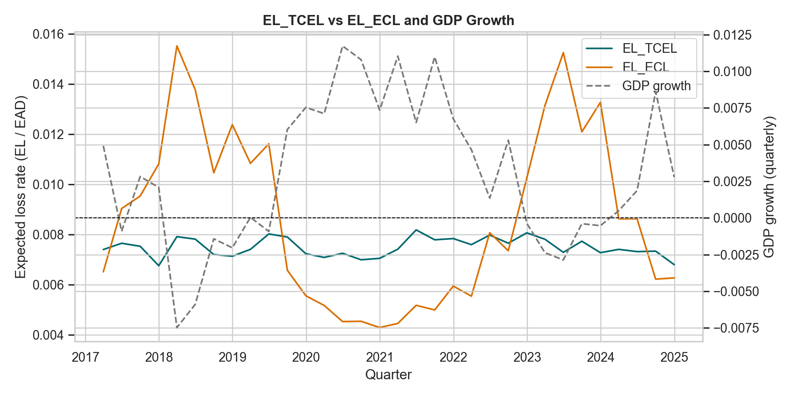
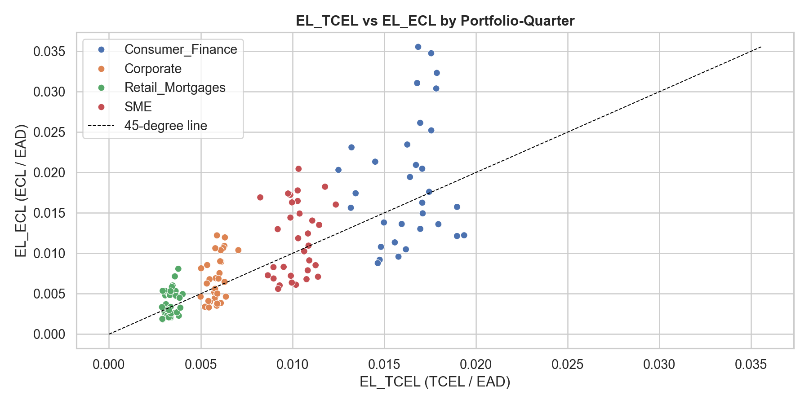
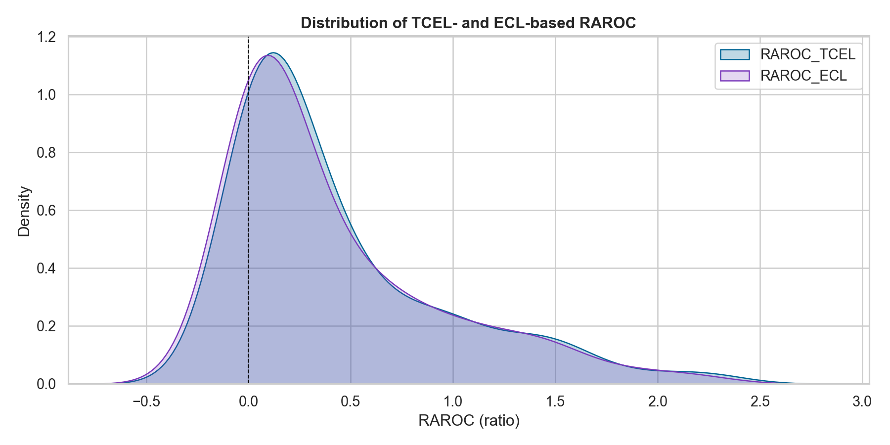
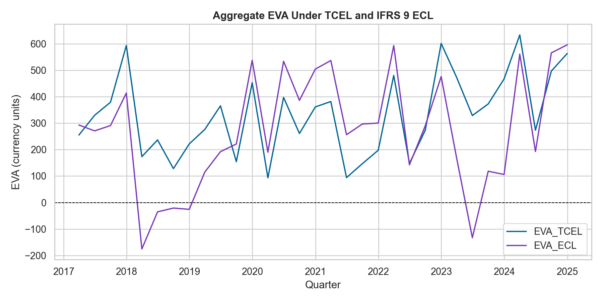
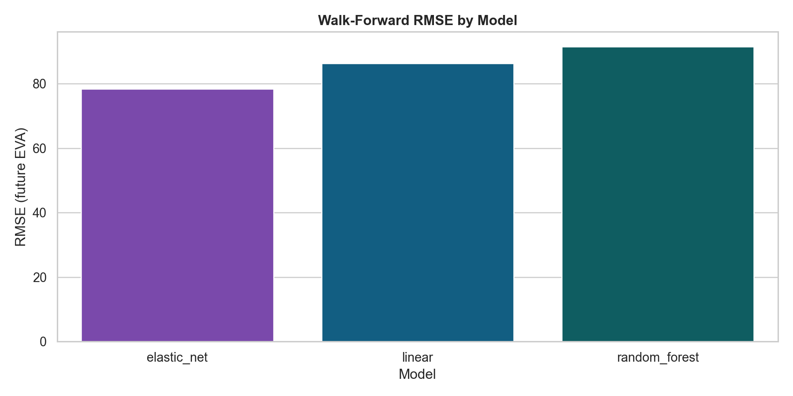
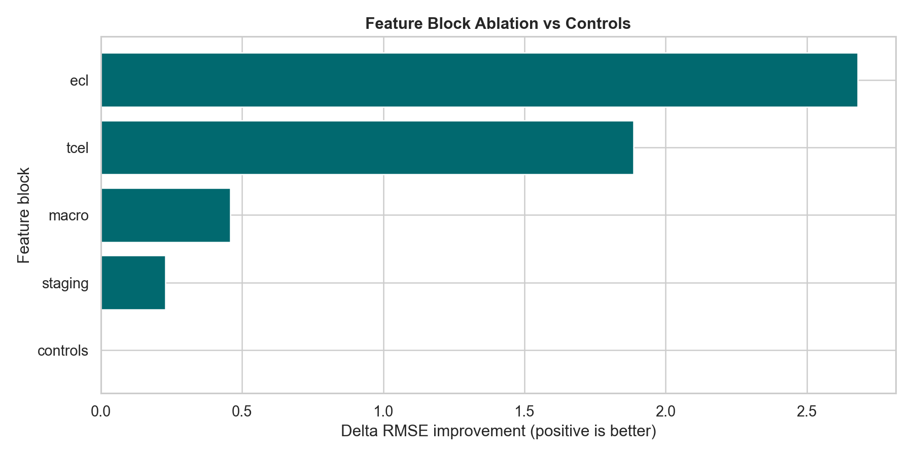
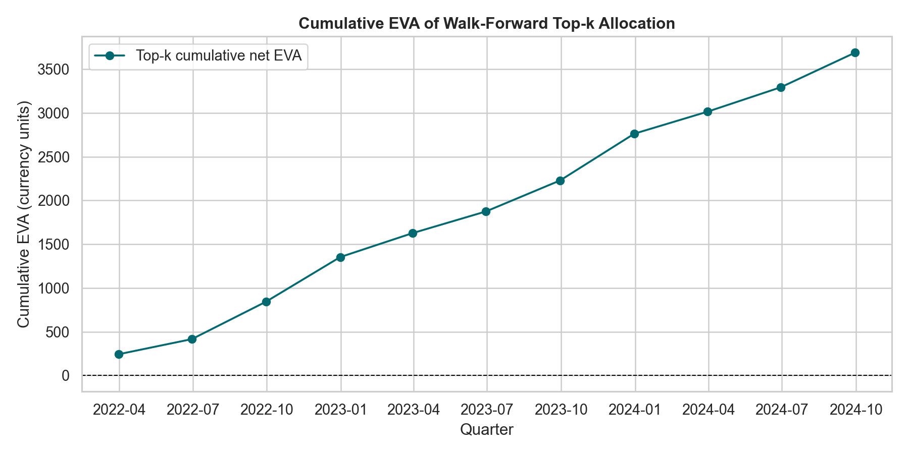
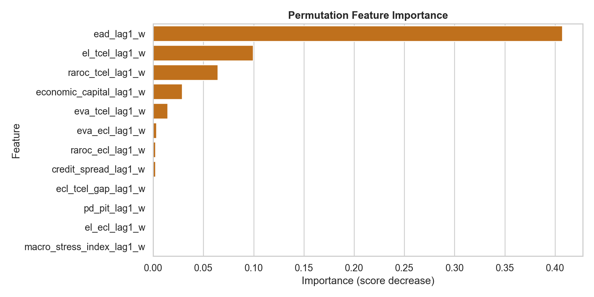
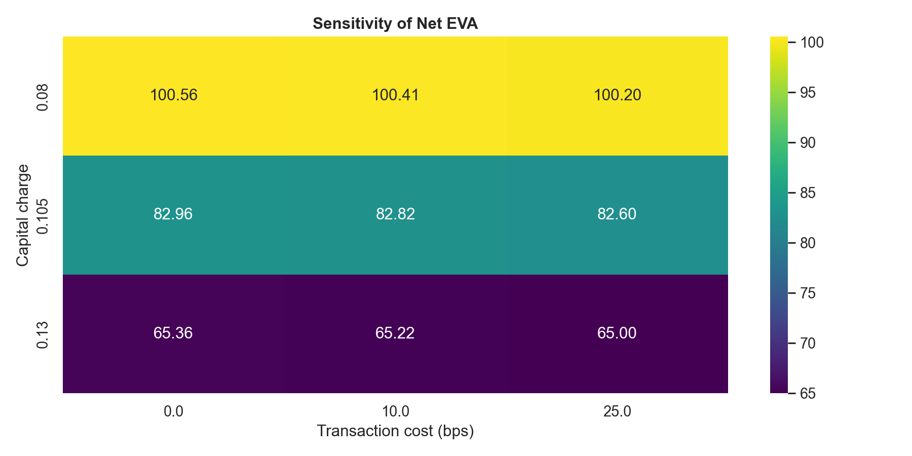

Mean EL volatility ratio
5.25x
ECL macro-stress corr.
0.53
TCEL macro-stress corr.
-0.00
Best walk-forward RMSE
78.39
TCEL vs ECL distributions and time series



EVA and RAROC stability


ML walk-forward, ablation and backtest
Model comparison
| model | rmse | mae | r2 | directional_accuracy | N |
|---|---|---|---|---|---|
| elastic_net | 78.3944 | 63.7152 | 0.8029 | 0.8636 | 44 |
| linear | 86.3417 | 68.6498 | 0.7550 | 0.8636 | 44 |
| random_forest | 91.5299 | 73.8184 | 0.7289 | 0.8182 | 44 |

Feature ablation
| block | best_rmse | delta_rmse_vs_controls | N |
|---|---|---|---|
| controls | 79.4852 | 0.0000 | 132 |
| staging | 79.2568 | 0.2284 | 132 |
| macro | 79.0272 | 0.4580 | 132 |
| tcel | 77.5988 | 1.8864 | 132 |
| ecl | 76.8041 | 2.6812 | 132 |


Interpretability and robustness
Main EL regression coefficients and R²
| dependent | term | coef | t_stat | p_value | r2 | N |
|---|---|---|---|---|---|---|
| el_ecl | const | 0.0075 | 0.8768 | 0.3806 | 0.849 | 120 |
| el_ecl | el_tcel_lag1_w | -0.0606 | -0.1329 | 0.8943 | 0.849 | 120 |
| el_ecl | macro_stress_index_lag1_w | 0.0021 | 2.3208 | 0.0203 | 0.849 | 120 |
| el_ecl | stage2_ratio_lag1_w | -0.0279 | -2.4458 | 0.0145 | 0.849 | 120 |
| el_ecl | pd_pit_lag1_w | 0.3437 | 5.1165 | 0.0000 | 0.849 | 120 |
Top feature importances
| feature | importance | importance_std | N |
|---|---|---|---|
| ead_lag1_w | 0.4072 | 0.0587 | 44 |
| el_tcel_lag1_w | 0.0995 | 0.0134 | 44 |
| raroc_tcel_lag1_w | 0.0643 | 0.0148 | 44 |
| economic_capital_lag1_w | 0.0288 | 0.0039 | 44 |
| eva_tcel_lag1_w | 0.0144 | 0.0040 | 44 |
| eva_ecl_lag1_w | 0.0032 | 0.0027 | 44 |
| raroc_ecl_lag1_w | 0.0023 | 0.0011 | 44 |
| credit_spread_lag1_w | 0.0022 | 0.0012 | 44 |

Robustness: subperiods and placebo
| subperiod | vol_ratio | corr_ecl_macro_stress | corr_tcel_macro_stress | N |
|---|---|---|---|---|
| early | 1.5338 | 0.5405 | 0.0174 | 60 |
| late | 1.4451 | 0.5279 | -0.0192 | 60 |
| model | rmse | mae | r2 | directional_accuracy | N |
|---|---|---|---|---|---|
| elastic_net | 146.5308 | 132.0292 | -5.7030 | 0.5455 | 44 |
| linear | 188.0142 | 154.5803 | -12.1129 | 0.6136 | 44 |
| random_forest | 149.9693 | 131.4247 | -5.3311 | 0.5682 | 44 |

Final conclusions
TCEL behaves as a stable structural expected-loss measure suitable for EVA, RAROC and economic-capital steering. IFRS 9 ECL adds forward-looking macro and staging information, but this creates volatility and procyclicality that should be decomposed rather than directly used as the sole management metric.